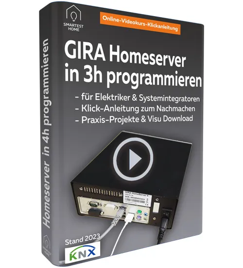

Gira Homeserver programmieren - 3h Videokurs Klickanleitung
Produktprofil · Marktplatz-Daten 2026-10-14 · Verkaufsseiten-Recherche 2026-10-14 · Kategorien: Computer & Internet
- Gira Homeserver programmieren - 3h Videokurs Klickanleitung ist ein/e Download in Computer & Internet, vertrieben über den Digistore24-Marktplatz von Anbieter smarthomeknx, gelistet seit 2020-04-14.
- Listenpreis $238.11 (single payment, installment) — Checkout, Auslieferung und Rückerstattungen laufen über Digistore24 selbst, nicht über den Anbieter.
- Käuferschutz: keine standardisierte Garantie-Formulierung gefunden — Rückerstattungsbedingungen vor der Zahlung auf der offiziellen Seite prüfen.
Interesse an Gira Homeserver programmieren - 3h Videokurs Klickanleitung? Aktueller Preis, Boni und Garantiebedingungen finden Sie auf der offiziellen Seite des Anbieters:
Offizielle Verkaufsseite ansehen
Affiliate-Link (Werbung) — wir verdienen ggf. eine Provision, ohne Mehrkosten für Sie.

Marktplatz-Daten
| Produkttyp | Download |
|---|---|
| Preis | $238.11 (Single payment, Installment) |
| Garantie/Rückgabe | Laut Verkaufsseite des Anbieters — vor dem Kauf auf der offiziellen Seite prüfen |
| Anbieter | smarthomeknx (gelistet seit 2020-04-14) |
Marktplatz-Beschreibung des Anbieters
Gira Homeserver in 3 Stunden einrichten/programmieren ist der Videokurs, der dich dauerhaft von Programmierern und GIRA-Systemintegratoren unabhängig macht und dir ermöglicht, mit geringstmöglichem Zeitaufwand jedes Haus/Villa mit GIRA Homeserver selbst zu programmieren und in Betrieb zu nehmen. Bauherren, Elektriker und Systemintegratoren , die schnell ein „Haus/Villa oder Gewerbegebäude“ per GIRA Homeserver steuern wollen Elektriker, die viel Zeit und Geld sparen und die Gira Homeserver Visualisierung auf Tablet/Smartphone/Touchscreen einrichten wollen Interessenten ohne Vorkenntnisse , die am PC mit der kostenlosen GIRA Experte Software alles selbst einrichten und programmieren wollen
Von der Verkaufsseite des Anbieters
Seitentitel: Gira Homeserver Programmierung - 3 Stunden Klick-Anleitung
Meta-Beschreibung: Gira Homeserver Programmierung ✅ Klick-Anleitung - einrichten und programmieren ✅ Für Bauherren und Elektriker ✅ Download HS-Praxis-Projekt & Visualisierung
Hauptüberschrift
GIRA Homeserver programmieren und einrichten in 3 Stunden!
Abschnitts-Überschriften
- GIRA Homeserver Programmierung - 3h Videokurs mit Klick-Anleitung Komplettpaket
- Komplettpaket: Gira Homeserver selbst programmieren, Gira QuadClient einrichten und Gira Homeserver Firmware auf aktuellsten Stand 2025 bringen
- Video-Kurs-Inhalte im Überblick (3 Stunden Klick-Anleitung)
- Top 10 FAQ zu Gira Homeserver programmieren
- Top 10 FAQ zu Gira Homeserver Visualisierung einrichten
- Über Frank Völkel
Einstiegstext
Mit diesem Videokurs kannst Du dank Klick-Anleitung einen Gira Homeserver einrichten und zur Steuerung und Homeserver Visualisierung eines kompletten Hauses oder Gewerbegebäudes professionell einsetzen. Nimmst Du den Unterschied zwischen den Kursen der Hersteller und uns wahr? Macht dir das Lernen mit guter Laune und einer lockeren unterhaltsamen Art auch deutlich mehr Spaß als langatmige Seminartage?
Dann bist du HIER genau richtig! Lerne, wie Du in 3 Stunden einen Gira Homeserver programmieren und damit jedes beliebige Gebäude per Gira Homeserver Visualisierung mittels Gira QuadClient auf Touchscreens wie Peaknx Controlmini und Peaknx Controlmicro oder per Gira Homeserver App auf Smartphone/Tablet steuern kannst. Unsere Klick-Anleitung basiert auf dem neuesten Gira Experte Software-Stand 10/2025.
Für Bauherren/Elektriker/Systemintegratoren aus der Schweiz: Dort heißt er Feller Homeserver bzw. Feller FacilityServer .
Du willst Dir nicht mühevoll über viele Monate das Praxis-Know-how zur Gira-Homeserver-Programmierung in Foren zusammensuchen und statt viel rumzuprobieren JETZT starten ?
Recherche-Methode: rohes HTML · 4133 Wörter · Qualität: rich · recherchiert am 2026-10-14. Vollständige Recherche-Datei (MD) ↗
Anwendung — laut Anbieter
Gira Homeserver Programmierung - 3 Stunden Klick-Anleitung Zum Inhalt springen Fragen? Ruf an! +49 (0) 89 215 297 80
DIY KNX Videokurse KNX Programmierung -8h Videokurs als Klick-Anleitung
Gira Homeserver programmieren – 3h Videokurs als Klick-Anleitung
Weitere Bilder (von der Verkaufsseite des Anbieters)
Bilder stammen von der offiziellen Verkaufsseite des Anbieters und zeigen das Produkt, wie es beworben wird.
Gut zu wissen
- Hoher Preis: $238.11 ist eine erhebliche Ausgabe — prüfen Sie, ob es einen Zahlungsplan gibt, und vergleichen Sie zuerst die günstigeren Alternativen der Kategorie.
- Keine Garantie-Formulierung in unserer Recherche gefunden — bestätigen Sie das Rückgabefenster auf der offiziellen Seite, bevor Sie kaufen.
- Hinweise der Verkaufsseite (wörtlich, nicht von uns geprüft): „Wir zeigen Dir in 12 Schritten alle notwendigen Details , die zur Einrichtung und Inbetriebnahme eines Einfamilienhauses, einer Villa oder Gewerbegebäudes wichtig sind"
- Hinweise der Verkaufsseite (wörtlich, nicht von uns geprüft): „Firmware des Gira Homeserver 4 updaten und auf aktuellsten Stand bringen (Achtung: behandelt auch ganz schwierige Fälle!)"
- Hinweise der Verkaufsseite (wörtlich, nicht von uns geprüft): „4. Gira Experte: Import ETS-Projekt - Achtung viele Fallstricke!"
Was ist Gira Homeserver programmieren - 3h Videokurs Klickanleitung?
Gira Homeserver programmieren - 3h Videokurs Klickanleitung ist ein/e download in der Kategorie Computer & Internet des Digistore24-Marktplatzes, veröffentlicht von Anbieter smarthomeknx und im Verkauf seit 2020-04-14. Der Anbieter beschreibt es so: "Gira Homeserver in 3 Stunden einrichten/programmieren ist der Videokurs, der dich dauerhaft von Programmierern und GIRA-Systemintegratoren unabhängig macht und dir ermöglicht, mit geringstmöglichem Zeitaufwand jedes Haus/Villa mit GIRA Homeserver selbst zu pro" (Marktplatz-Beschreibung des Anbieters, leicht gekürzt).
Gira Homeserver programmieren - 3h Videokurs Klickanleitung Preis: was Sie zahlen
Der Marktplatz listet Gira Homeserver programmieren - 3h Videokurs Klickanleitung zum $238.11 Preis (single payment, installment). Digistore24 fügt im Checkout die gesetzliche Steuer Ihres Landes hinzu — dort sehen Sie den Endbetrag vor der Zahlung. Eine separate Plattformgebühr gibt es nicht; Anbieter können eigene Upsells nach dem Checkout anbieten.
Gira Homeserver programmieren - 3h Videokurs Klickanleitung Rückerstattung und Geld-zurück-Garantie
Wir haben keine standardisierte Garantie-Formulierung auf der Verkaufsseite gefunden. Rückerstattungen für Digistore24-Käufe laufen über die Plattform: Antrag über den Support-Link in Ihrer Bestell-E-Mail, innerhalb des Garantiezeitfensters, das im Checkout angezeigt wird. Praktischer Rat: Entscheiden Sie innerhalb des Fensters — wenn das Produkt unter den Erwartungen bleibt, erstatten lassen statt irren lassen.
Mechanik im Detail: So funktionieren Digistore24-Rückerstattungen.
Für wen ist Gira Homeserver programmieren - 3h Videokurs Klickanleitung geeignet?
Basierend auf der Computer & Internet-Einordnung und der single payment, installment-Abrechnung richtet sich Gira Homeserver programmieren - 3h Videokurs Klickanleitung an Käufer, die computer & internet-Lösungen suchen und ein Budget für einen Premium-Kauf eingeplant haben. Der ehrliche Test ist nicht die Kategorie, sondern Ihre eigene Situation: Werden Sie es realistisch innerhalb des Garantiefensters nutzen? Wenn ja, ist der Preis eine Investition; wenn nein, ist er Ballast — unabhängig von der Qualität.
Ist Gira Homeserver programmieren - 3h Videokurs Klickanleitung seriös? Was Sie vor dem Kauf prüfen
Wir bewerten keine Seriosität — das kann niemand, ohne das Produkt zu nutzen. Prüfbare Punkte, alle auf dieser Seite: die Marktplatz-Historie des Anbieters (im Verkauf seit 2020-04-14), die wörtlichen Verkaufsseiten-Auszüge unten (gekennzeichnet als Anbieteraussagen — deren Werbung, nicht unsere Empfehlung), die Garantiebedingungen im Checkout und die Auslieferungsart. Vorsichtsignale bei jedem Angebot: Countdown-Dringlichkeit gepaart mit vagen Rückerstattungsbedingungen, Testimonials ohne Datum und Anbieterseiten, die den Preis bis zum Checkout verstecken.
Wie kommen Sie nach dem Kauf an Gira Homeserver programmieren - 3h Videokurs Klickanleitung?
Der Checkout läuft über Digistore24. Nach der Zahlung: Download-Produkte werden digital geliefert: sofort nach dem Checkout erhalten Sie Downloadlinks (oder Zugang zu einem Mitgliederbereich) — kein physischer Versand. Bewahren Sie die Bestell-E-Mail auf — sie ist Ihr Schlüssel zum/d zur download, zu Rückerstattungsanträgen und zum Digistore24-Käufersupport.
Gira Homeserver programmieren - 3h Videokurs Klickanleitung Erfahrungen: so recherchieren Sie richtig
Die meisten „Erfahrungsberichte" zu Marktplatz-Produkten sind Affiliate-Inhalte — einschließlich Seiten wie dieser, die an Käufen mitverdienen. Behandeln Sie jeden Bericht (auch unseren) als Ausgangspunkt und prüfen Sie gegen Primärquellen: die Verkaufsseite des Anbieters, die Digistore24-Rückerstattungsrichtlinie und — für computer & internet — unabhängige Communities außerhalb des Affiliate-Ökosystems. Auf dieser Seite sind die Verkaufsseiten-Auszüge unten wörtlich zitiert, damit Sie die Aussagen des Anbieters bewerten können, ohne wegzuklicken.
Wie Sie Gira Homeserver programmieren - 3h Videokurs Klickanleitung sicher kaufen
- Öffnen Sie die offizielle Verkaufsseite und lesen Sie das vollständige Angebot.
- Bestätigen Sie Endpreis und Garantiezeitfenster auf der Digistore24-Kassenseite — sie ist bindend, kein Vergleichsportal.
- Zahlen Sie innerhalb des Digistore24-Checkouts (niemals per Überweisung oder Off-Platform-Links).
- Speichern Sie die Bestellbestätigung; notieren Sie die Rückerstattungsfrist im Kalender.
- Prüfen Sie zügig. Der Digistore24-Käufersupport hilft, wenn der Anbieter nicht reagiert.
Vollständiges Recherche-Archiv für dieses Produkt (Markdown: kompletter Marktplatz-Datensatz + wörtliche Verkaufsseiten-Auszüge): Gira Homeserver programmieren - 3h Videokurs Klickanleitung — vollständiges Datenarchiv (Markdown-Datei: 52161-gira-homeserver-programmieren-3h-videokurs-klickanleitung.md).
- Listenpreis & Abrechnung — Quelle: offizielle Digistore24-Marktplatz-API, Stand 2026-10-14. Maßgeblich für den aktuellen Preis ist immer die Kassenseite.
- Verkaufsseiten-Zitate — Quelle: https://www.smartest-home.com/gira-homeserver-programmieren/, abgerufen 2026-10-14 (Methode: rohes HTML). Verify: offizielle Seite öffnen.
- Garantie / Rückgabe — vom Anbieter festgelegt; vor dem Kauf auf der Verkaufsseite bestätigen.
- Nicht von uns geprüft: Produktqualität, Ergebnisse, Testimonials — kein Praxistest für dieses Listing durchgeführt.
Häufige Fragen zu Gira Homeserver programmieren - 3h Videokurs Klickanleitung
Antworten aus dem Marktplatz-Snapshot (2026-10-14) und der Verkaufsseiten-Recherche (2026-10-14); Anbieteraussagen sind inline gekennzeichnet.
Was ist Gira Homeserver programmieren - 3h Videokurs Klickanleitung?
Gira Homeserver programmieren - 3h Videokurs Klickanleitung ist ein Angebot des Typs „Download" im Digistore24-Marktplatz, Anbieter: smarthomeknx, gelistet seit 2020-04-14. Eingepflegt unter Computer & Internet. Digistore24 wickelt Checkout, Lieferung und Rückgaben ab.
Wie viel kostet Gira Homeserver programmieren - 3h Videokurs Klickanleitung?
Der Digistore24-Marktplatz listet es für $238.11 (single payment, installment). Preise legt der Anbieter fest und können sich ändern — der Marktplatz-Eintrag oben zeigt den Schnappschuss; die offizielle Verkaufsseite zeigt den aktuellen Preis.
Gibt es eine Geld-zurück-Garantie für Gira Homeserver programmieren - 3h Videokurs Klickanleitung?
Unsere Verkaufsseiten-Recherche hat keine explizite Garantie-Formulierung gefunden. Viele Digistore24-Produkte bieten 60 Tage Geld-zurück, aber das legt jeder Anbieter selbst fest — bestätigen Sie es auf der offiziellen Verkaufsseite, bevor Sie kaufen.
Ist Gira Homeserver programmieren - 3h Videokurs Klickanleitung seriös?
Wir bewerten keine Seriosität — wir veröffentlichen überprüfbare Zahlen: Anbieter smarthomeknx (gelistet seit 2020-04-14), mit der vollständigen Verkaufsseiten-Recherche archiviert auf dieser Seite (Anbieteraussagen als solche gekennzeichnet). Lesen Sie unsere 6-Punkte-Bewertungsmethode und entscheiden Sie anhand der Zahlen — oder diskutieren Sie Gira Homeserver programmieren - 3h Videokurs Klickanleitung auf GitHub.
Wo kann ich Gira Homeserver programmieren - 3h Videokurs Klickanleitung sicher kaufen?
Nur über die offizielle Verkaufsseite, die auf dieser Seite verlinkt ist (Checkout und Rückgaben laufen über Digistore24). Prüfen Sie dort Preis und Garantie vor der Bestellung. Der Link ist ein Affiliate-Link — der Kauf unterstützt diese Website ohne Mehrkosten für Sie.
Wie erhalte ich Gira Homeserver programmieren - 3h Videokurs Klickanleitung nach der Zahlung?
Der Checkout läuft über Digistore24: Nach der Zahlung erhalten Sie Ihren Zugang oder Download per E-Mail und in Ihrem Digistore24-Kundenkonto. Lieferdetails für diesen Produkttyp: Download-Produkte werden digital geliefert: sofort nach dem Checkout erhalten Sie Downloadlinks (oder Zugang zu einem Mitgliederbereich) — kein physischer Versand. Bei Problemen kann der Digistore24-Käufersupport Ihre Bestellung wiederherstellen.
Alle 50 Käuferfragen zu Computer & Internet — das komplette Kategorie-FAQ.
Gira Homeserver programmieren - 3h Videokurs Klickanleitung auf Reddit diskutieren
In Community-Threads vergleichen echte Käufer Erfahrungen. Wir verlinken Communities, keine einzelnen Posts — Threads verschwinden, Subreddits bleiben:
- r/de_EDV — deutschsprachige Community mit Diskussionen zu computer & internet.
- Reddit-Suche nach „Gira Homeserver programmieren - 3h Videokurs Klickanleitung" — Live-Ergebnisse, von uns nicht beeinflusst.
- Top-„Erfahrungs"-Treffer dieses Jahr — selbst nach Aktualität filtern.
Passendes auf Amazon.de
Physische Produkte und Zubehör, die häufig zusammen mit Gira Homeserver programmieren - 3h Videokurs Klickanleitung gekauft werden:
- Software auf Amazon.de — Top-Ergebnisse, Amazon-Ranking.
- Bestseller: Software — live Liste von Amazon, von uns nicht kuratiert.
Werbung: Als Amazon-Partner verdient DigistorePicks DE an qualifizierten Käufen (Partner-tag adminstorede-21). Amazon setzt eigene Preise und Provisionen (niedrige einstellige Prozente — weit unter den 30–75% der Digistore24-Anbieter). Amazon ist ein Convenience-Angebot für Sachprodukte, kein Ersatz für das digitale Produkt oben.
Ähnliche Angebote in Computer & Internet

Expert Scaling System — Das komplette System für automatisierte Onlinekurs- und Coaching-Verkäufe. Für Coaches, Trainer und Berater. Kurzbeschreibung: 997€-Komp

Mehr Sichtbarkeit. Mehr Vertrauen. Mehr Umsatz. Mit „ Reich mit Weite – KI Edition “ verkaufst du ein Produkt, das Menschen zeigt, wie sie ohne Werbung, aber mi

Viele haben ein gutes Angebot – aber verkaufen es „nett“ statt überzeugend. Das Viele haben ein gutes Angebot – aber verkaufen es „nett“ statt überzeugend. Das

Zencaptcha schützt Webseiten vor Spam und betrügerischen Aktivitäten. Falsche und temporäre E-Mail-Adressen werden erkannt und Bots werden herausgefordert, noch
Weitere Angebote von smarthomeknx
Das Videokurs-Komplettpaket richtet sich an: Bauherren und Elektriker , die schnell ihr „KNX Smart Home“ umsetzen wollen Bauherren, die viele tausend Euro spare
GIRA X1 Videokurs "Programmierung in 2 Stunden" ist der Videokurs, der dich dauerhaft von Programmierern und GIRA-Systemintegratoren unabhängig macht
Ähnliche Preislage in Computer & Internet
Die meisten starten mit einem Song. Die besseren starten mit einer klaren Richtung. Global Sound Radar™ ist ein interaktives KI-Tool, das aktuelle Google-Trends
1€ E-Book verschenken und bis zu 250€ pro Empfehlung verdienen! Verschenke diesen hochwertigen Report und verdiene durch verschiedene Upsells und Folgeangebote
Brandneuer VSL | 50% Provision ✔︎ Brandneues System im Trendmarkt "Online-Umfragen"! ✔︎ Einfach Traffic schicken und verdienen! ✔︎ Erstellt von erfahr

55% Provision! Bewirb jetzt das App Cash System und verdiene maximale Provision! - 55% Provision auf das erste Produkt im Funnel (47€) - Starker Upsell-Funnel m
Ähnliche Suchanfragen
Wo Sie es sich ansehen können
Wo Sie es sich ansehen können
Aktuelle Preise, Garantie und Boni finden Sie auf der offiziellen Verkaufsseite:
Offizielle Verkaufsseite ansehen
Das ist ein Affiliate-Link (Werbung) — kaufen Sie darüber, verdienen wir ggf. eine Provision, ohne Mehrkosten für Sie.
Quellen & weiterführende Informationen
- Offizielle Verkaufsseite (aktueller Preis, Garantie, Boni): www.smartest-home.com/gira-homeserver-programmieren/ (Affiliate-Link)
- Öffentliche Digistore24-Produktseite: checkout-ds24.com/product/320544
- Vollständige Recherche-Datei (Markdown, versioniert): content/products/52161-gira-homeserver-programmieren-3h-videokurs-klickanleitung.md
- Affiliate-Supportseite des Anbieters: www.smartest-home.com/affiliateprogramm
- Marktplatz-Kategorie: Computer & Internet
Wie wir Produkte wie Gira Homeserver programmieren - 3h Videokurs Klickanleitung bewerten
Sechs Prüfungen, ausschließlich mit offiziellen Marktplatz-Zahlen. Die vollständige Bewertungsmethode lesen · unsere Recherche-Standards & Kennzeichnung.
Fragen oder eigene Erfahrungen mit Gira Homeserver programmieren - 3h Videokurs Klickanleitung?
Praxis-Tests veröffentlichen wir erst, nachdem wir ein Produkt selbst gekauft haben — aber Ihre Erfahrung hilft anderen Lesern: Diskussion zu Gira Homeserver programmieren - 3h Videokurs Klickanleitung auf GitHub starten/verfolgen. Falsche Zahl gefunden? Korrektur melden — jede Seite zeigt ihre Datenstände, Korrekturen gelten für die ganze Website.